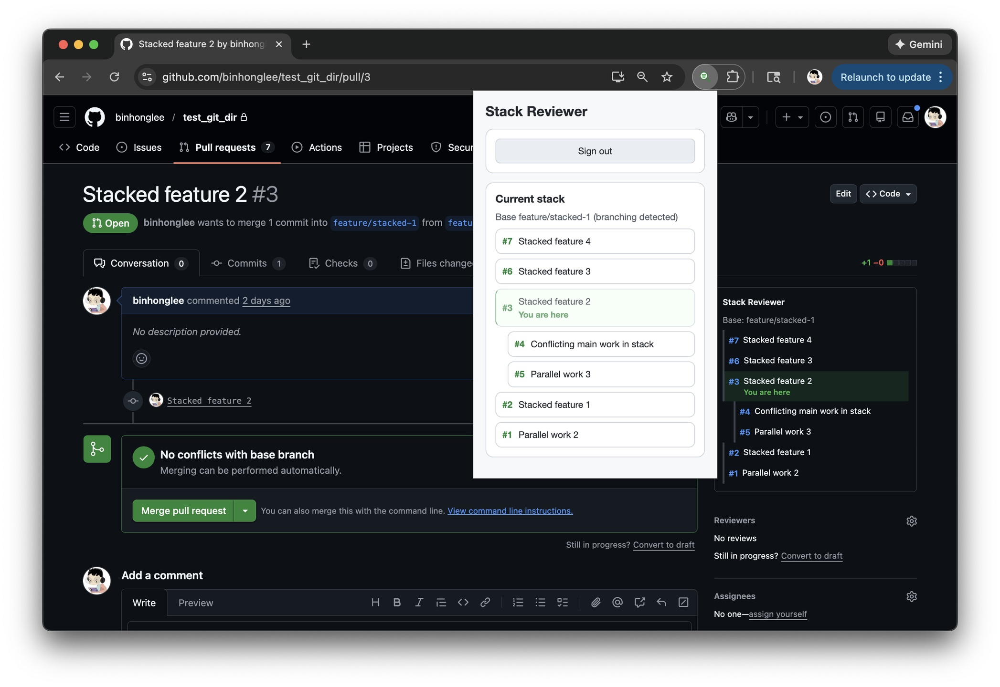
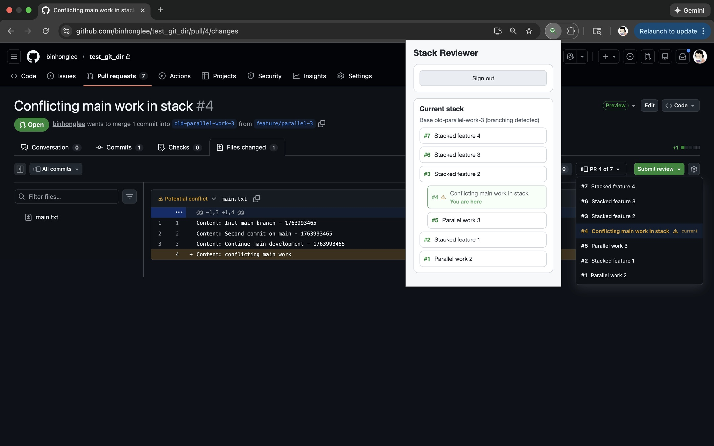
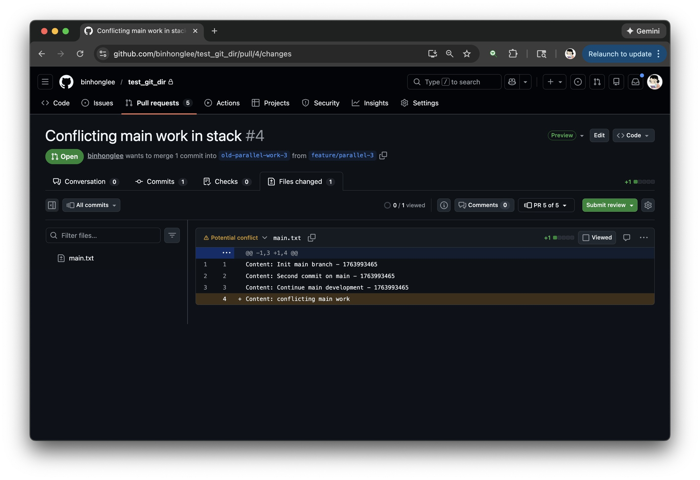

Browser extension for GitHub pull requests
Stack Reviewer
Review stacked PRs in the right order, every time.
Stack Reviewer embeds a sidebar panel directly into GitHub pull requests, showing the full stack, highlighting the current PR, and keeping everything in sync as you review. Works with any stacking tool: Git Navigator, jj, spr, or your own workflow.
The problem
GitHub buries stacked PRs in branch names and scattered links. Reviewers waste time piecing together the order instead of reviewing code. Stack Reviewer surfaces the full context in the sidebar so you always know where you are.
What you get
- Clear ordering — see every PR in the stack and how they relate
- Current PR highlighted — always know which one you're reviewing
- No context switching — stays in the GitHub sidebar, not a separate tab
- Private repo support — sign in with GitHub when needed
See it in action



How it works
Open any GitHub pull request. Stack Reviewer automatically detects the stack and displays it in the sidebar.
The panel highlights your current position, shows what comes before and after, and maintains a consistent order so you can review the stack sequentially.
For private repositories, sign in via the extension popup. If the stack has branches, Stack Reviewer picks a linear path to keep the review order clear.
Privacy & permissions
Stack Reviewer runs entirely in your browser. It calls the GitHub API directly to fetch stack data—no intermediate server, no data collection. Your code and review activity stay between you and GitHub.
Get started in seconds
Install the extension, open any stacked PR on GitHub, and the sidebar panel appears automatically. No configuration required.
Install from Chrome Web Store